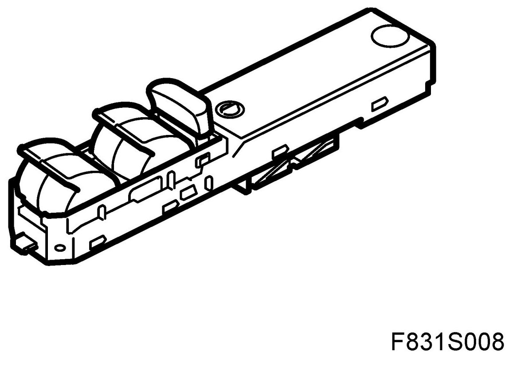
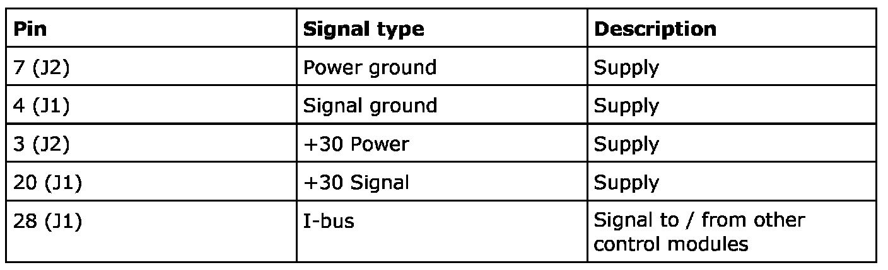
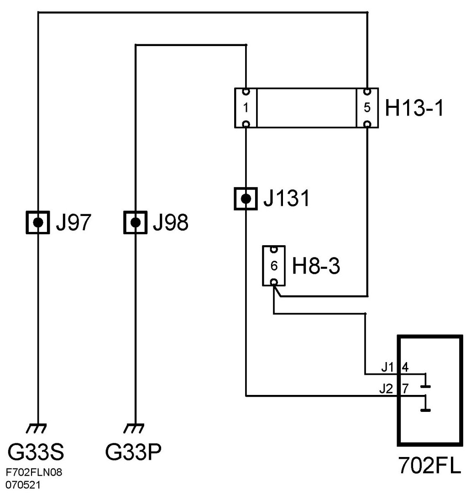
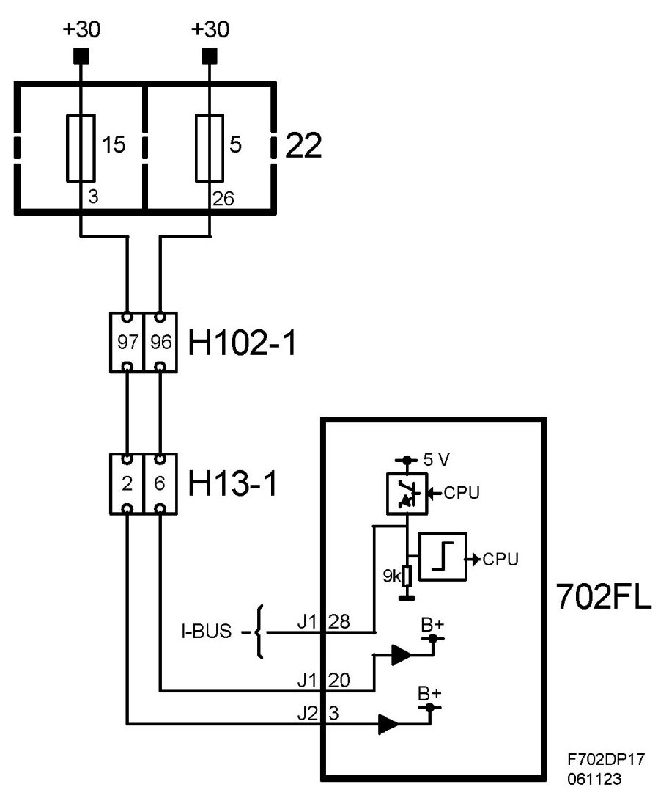

Control Module, Door, Front, Left (702FL)
Control Module, Door, Front, Left (702FL)
Location
Control module, door, front, left (702FL)

Main task
The primary function of the DDM is to:
- Read the status of the window lift buttons
- Control and supply the window lift in the driver's door (with optional pinch protection function).
- Transmit the status of the other window lift buttons on the bus.
- Read the boot lid button status and transmit the value on the bus.
- Read the status of the door mirror buttons.
- Control and supply the driver's door mirror motor (with optional memory function and electrically operated retraction) and via the bus to control the equivalent function on the front passenger door.
- Supply the driver's door mirror heating.
- Read the central locking button status and transmit the value on the bus.
- Supply the central locking system motor (with or without TSL) in the driver's door.
- The control module also reads the door switch status via a direct connection but does not use the value. The connection is intended for future development.
- Supply the illumination of the door buttons.
- Supply the courtesy lighting mounted on the bottom edge of the door.
Type
The DDM has an external button for each window lift. The button has the following positions:
- Express up (only with the pinch protection option)
- Up
- Unaffected
- Down
- Express down
There is also a button for inhibiting the rear window lifts. The button is also used to override the pinch protection function of the window lifts and the sunroof. In this case the button must be depressed at the same time as the window or sunroof is operated. Internally there is a microprocessor with a clock, RAM and a flash EPROM.
An internal bus which connects the processor and memory with the I/O unit. The I/O unit is responsible for reading in the values of A/D converted analogue inputs, digital inputs, bus signals and for activating transistors in the output amplifier.
For information about the control module see control module, general description.
Power supply, ground and bus communication


